1．牙周病分期（PD0–PD4）
分期依據是「附著喪失（attachment loss）」比例，只能靠探診或 X 光測量，肉眼只能看到牙齦與牙結石——所以每張圖的原文圖說都強調 radiographs are required。
| 分期 | 定義（指南原文） |
|---|---|
| PD0 | 臨床正常，無牙齦發炎或牙周炎 |
| PD1 | 只有牙齦炎，無附著喪失；齒槽緣高度與結構正常 |
| PD2 | 早期牙周炎：附著喪失 <25%，或多根齒最多 stage 1 根分岔暴露 |
| PD3 | 中度牙周炎：附著喪失 25–50%，或 stage 2 根分岔暴露 |
| PD4 | 重度牙周炎：附著喪失 >50%，或 stage 3 根分岔暴露 |
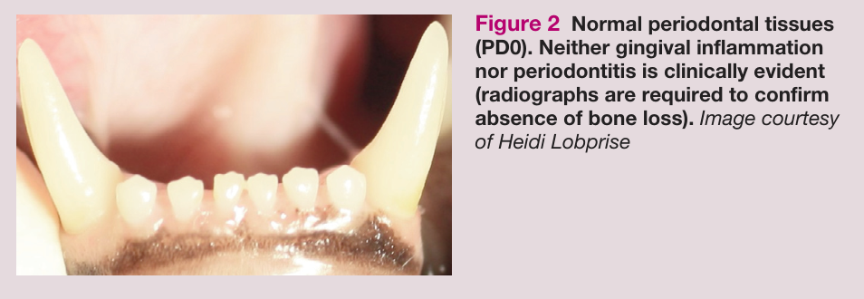
Normal periodontal tissues (PD0). Radiographs are required to confirm absence of bone loss.
看點：牙齦邊緣薄、粉紅、緊貼牙面，無紅腫。外觀正常仍不代表沒有骨流失，要照 X 光才能確定是 PD0。
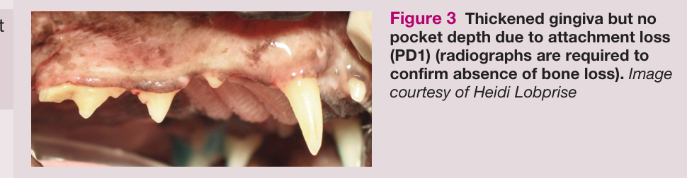
Thickened gingiva but no pocket depth due to attachment loss (PD1).
看點：牙齦增厚、邊緣發紅，但探針探不出附著喪失造成的牙周囊袋。PD1 是唯一可逆的階段，徹底清除牙菌斑後牙齦可以恢復。
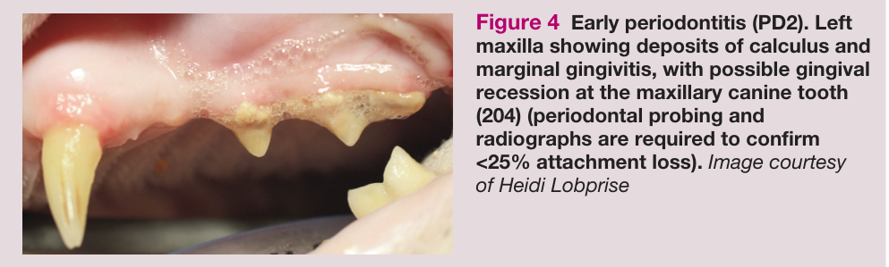
Left maxilla: calculus, marginal gingivitis, possible gingival recession at 204. Probing and radiographs required to confirm <25% attachment loss.
看點：牙結石＋牙齦邊緣發炎，204（左上犬齒）可能有牙齦萎縮。「可能」是因為萎縮程度要用探針和 X 光確認是否 <25%。
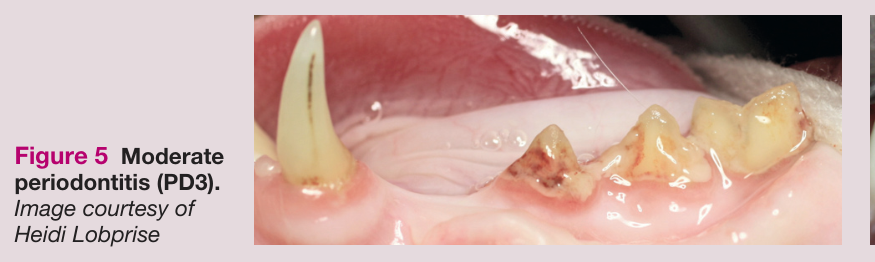
Moderate periodontitis (PD3).
看點：牙齦明顯萎縮、牙根暴露。附著喪失 25–50%，或多根齒出現 stage 2 根分岔暴露（探針可部分穿入根分岔）。
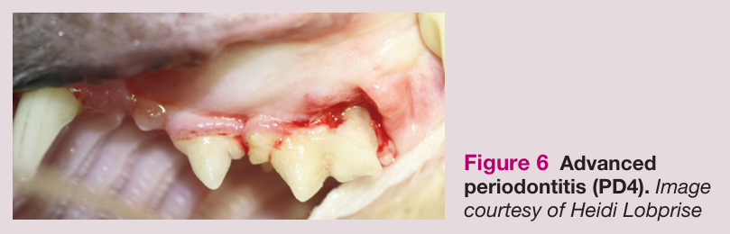
Advanced periodontitis (PD4).
看點：大量牙結石、牙齦嚴重退縮、根分岔完全暴露。附著喪失 >50% 的牙齒通常以拔除為主。
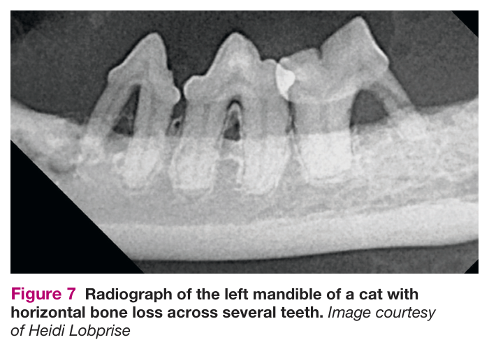
Radiograph of the left mandible with horizontal bone loss across several teeth.
看點：多顆牙齒的齒槽骨嵴一起往根尖方向下降、高度一致，稱為水平型骨流失。只在單顆牙旁往下凹的是垂直型。X 光還能看出根分岔病灶的形狀，以及有沒有合併牙髓感染（perio-endo lesion）。
2．其他牙周／牙齦疾病
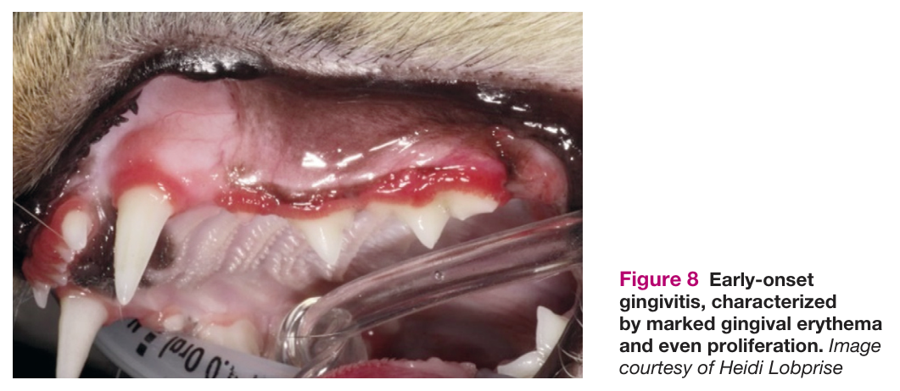
Early-onset gingivitis, characterized by marked gingival erythema and even proliferation.
看點：約 6–8 月齡出現明顯牙齦紅腫，甚至增生。X 光上的骨流失程度可相當於中重度牙周病。應及早全身麻醉，依牙周指數做完整牙周治療並拔牙，之後要追蹤，因為可能進展成侵襲性牙周炎或 FCGS。
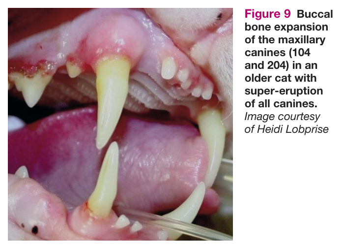
Buccal bone expansion of the maxillary canines (104, 204) in an older cat with super-eruption of all canines.
看點：老貓上犬齒頰側骨頭膨大，所有犬齒都往外伸長（super-eruption，看起來牙齒「變長」）。常合併牙冠或牙根吸收與動搖，通常需要拔牙。
3．咬合不正（Malocclusion）
| 分類 | 來源 | 描述 | 常見創傷位置 |
|---|---|---|---|
| MAL1 | 牙齒 | 上下顎關係正常，個別牙齒排列異常 | 下犬齒舌側位 → 戳傷上顎 |
| MAL2 | 骨骼 | 下顎後縮（overbite） | 下犬齒戳傷上顎 |
| MAL3 | 骨骼 | 下顎前突（underbite） | 輕度：上第三門齒與下犬齒互磨；重度：上門齒傷及下門齒舌側牙齦 |
| MAL4 | 骨骼 | 頭尾向、左右或背腹向的不對稱 | 左右型：上 P4 撞傷下 M1 頰側黏膜 |
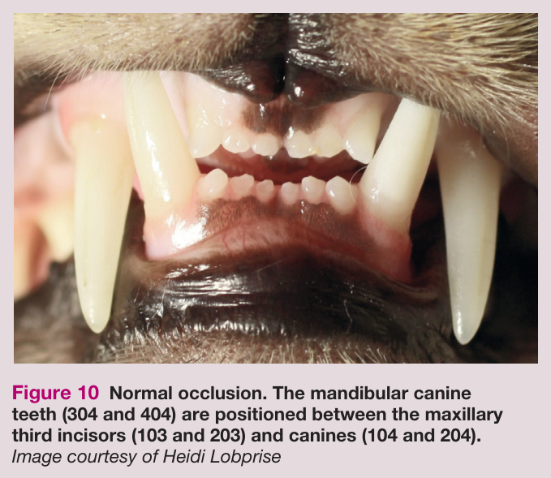
Mandibular canines (304, 404) sit between maxillary I3 (103, 203) and canines (104, 204).
看點：判斷咬合的基準是下犬齒剛好卡在上第三門齒與上犬齒之間的縫隙。先記熟這張，再對照後面的異常。
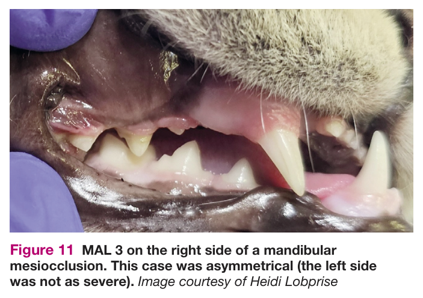
MAL 3 on the right side of a mandibular mesiocclusion; asymmetrical case.
看點：下犬齒位置往前（mesial）移，不再卡在正常縫隙。這例左右不對稱，右側較嚴重，所以兩側都要檢查。
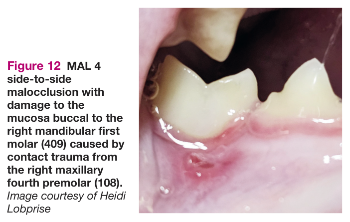
Mucosal damage buccal to 409 caused by contact trauma from 108.
看點：右上 P4（108）直接撞到右下 M1（409）頰側的黏膜，造成創傷。這類接觸創傷如果發生在拔除 409 之後，就是 Fig 25 化膿性肉芽腫的成因。
4．貓慢性齒齦口炎（FCGS）
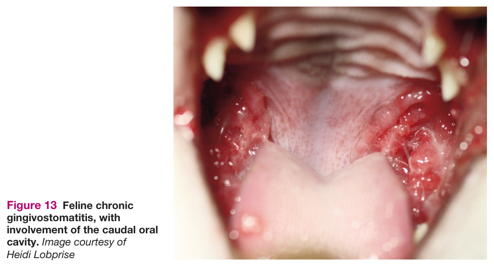
Feline chronic gingivostomatitis, with involvement of the caudal oral cavity.
看點：發炎範圍超出牙齦，延伸到尾側口腔（腭舌弓外側），這是 FCGS 與單純牙周病的關鍵差別。診斷主要依臨床表現，常見高球蛋白血症。治療前要先驗 FIV/FeLV，因為結果跟預後有關。
5．牙齒吸收（Tooth Resorption）
這組是整份指南判讀價值最高的圖。分型要看 X 光，而分型直接決定處置：拔除整顆牙，或只切除牙冠。
| 分型 | X 光特徵 | 處置 |
|---|---|---|
| Type 1（發炎性） | 牙體局部缺損，其餘牙根放射密度正常，牙周韌帶腔（PDL space）清楚完整；常合併牙周炎 | 整顆拔除（含牙根），術後照 X 光確認拔乾淨 |
| Type 2（置換性） | 牙根被骨頭取代：PDL space 消失，殘根變得較透亮、呈條紋狀 | 牙冠截除（crown amputation／coronectomy）＋牙齦縫合，術後 X 光記錄刻意保留的牙根 |
| Type 3 | 同一顆牙同時有 type 1 與 type 2 特徵 | 雙根齒：type 1 的根拔除、type 2 的根截冠；單根齒（如犬齒）：盡量拔，必要時在較根尖處截除 |
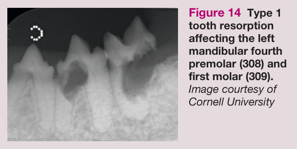
Type 1 tooth resorption affecting 308 and 309.
判讀：找牙根周圍那條黑色細線（PDL space）是否還在。這張裡 308／309 的 PDL 清楚，殘存牙根密度正常，只有局部缺損 → type 1 → 整顆拔。
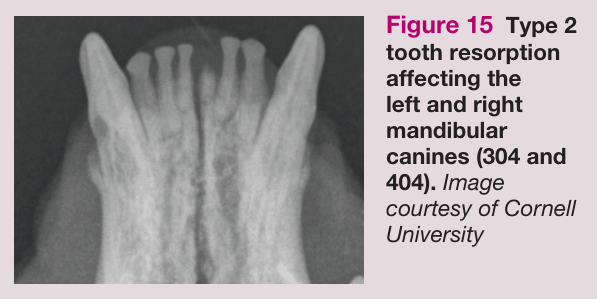
Type 2 tooth resorption affecting both mandibular canines (304, 404).
判讀：兩側下犬齒牙根輪廓模糊，跟周圍骨頭融在一起、看不到 PDL space，呈條紋狀 → 牙根已被骨頭置換，硬拔會很難且容易斷根 → 截冠。
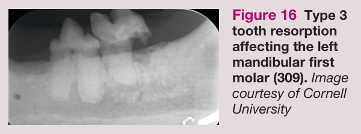
Type 3 tooth resorption affecting 309.
判讀：同一顆 309 的兩根表現不同：一根還看得到 PDL（type 1 特徵），另一根已與骨融合（type 2 特徵）。雙根齒的處置邏輯是「各根分開處理」。
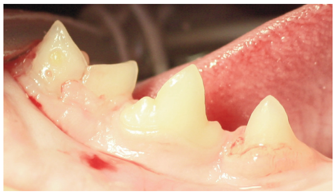
Gingival tissue encroaching into resorptive lesions of 407 and 409, not appearing inflamed.
看點：牙齦組織長進牙冠的缺損裡，外觀不一定紅腫，容易被當成單純牙齦增生而漏看。
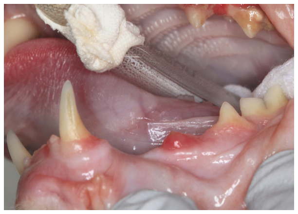
Complete gingival coverage of 307.
看點：牙冠已吸收殆盡，原位只剩一個完整牙齦覆蓋的小丘。看起來像「少一顆牙」，其實底下可能還有殘根，一定要照 X 光。
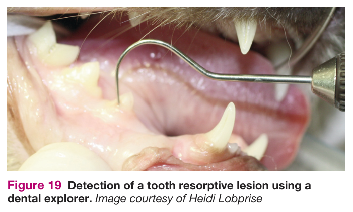
Detection of a tooth resorptive lesion using a dental explorer.
看點：病灶位在牙齦下的牙骨質–琺瑯質交界（CEJ），要在全身麻醉下用尖頭 explorer 沿 CEJ 滑，卡住就是缺損。TR 會持續進展，其他牙也會陸續出現，所以每年都應照 X 光追蹤。
6．牙齒斷裂與顏面外傷
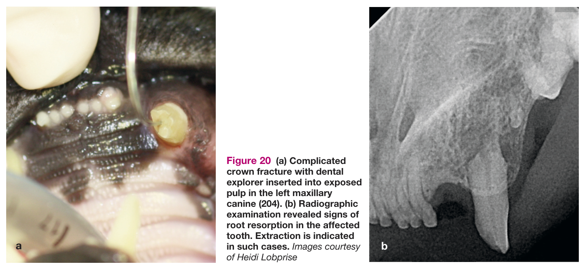
(a) Explorer inserted into exposed pulp of 204. (b) Radiograph reveals root resorption; extraction indicated.
看點：牙髓暴露（complicated fracture）是貓牙髓疾病最常見的原因。X 光要找：根尖透亮區、發炎性牙根吸收、牙髓腔沒有隨年齡變窄、根尖旁的緻密性骨炎。已有牙根吸收就不適合做根管治療，要拔牙。
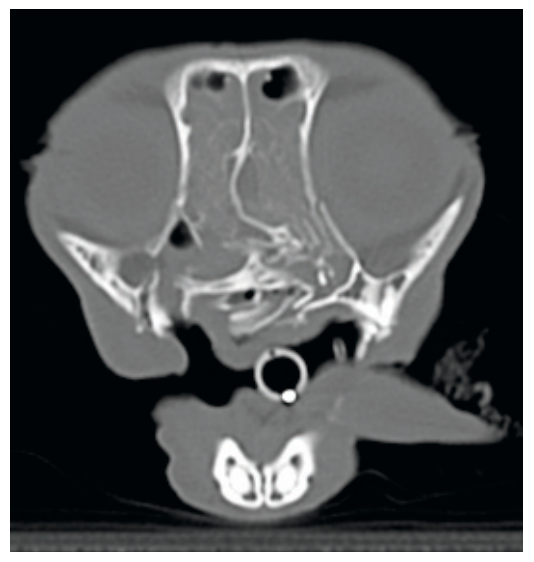
Conventional CT: extensive craniofacial trauma involving maxillary, palatine, pterygoid and nasal bones.
看點：顱顏骨折用 CT 評估比一般 X 光好，可以看到上顎骨、腭骨、翼骨、鼻骨的多處骨折，避免結構重疊。（補充，非指南原文）這類損傷常見於高樓墜落症候群。
7．口腔腫塊
貓的口腔病灶高達 68% 是惡性，最常見的是鱗狀上皮細胞癌（SCC）。指南特別提醒：如果只有單一區域出現牙齦炎和附著喪失（focal periodontitis），要認真考慮底下是腫瘤。可疑病灶都要做切片。
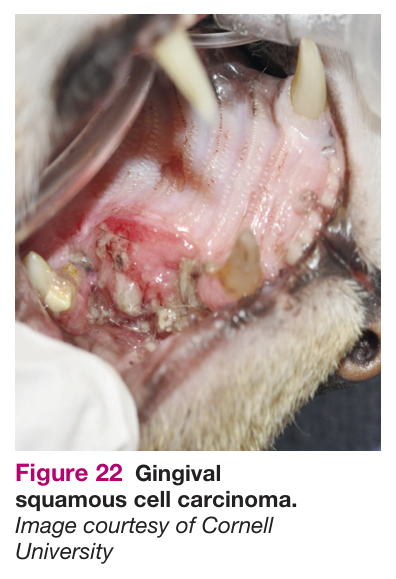
Gingival squamous cell carcinoma.
看點：不規則增生、表面潰瘍，牙齒周圍組織破壞。外觀可能很像嚴重牙周病，不能只靠肉眼判斷。
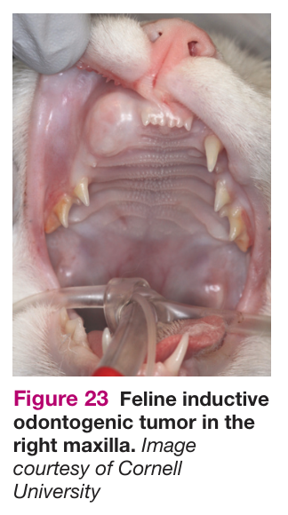
Feline inductive odontogenic tumor in the right maxilla.
看點：指南將其歸類為齒源性腫瘤。（補充，非指南原文）典型見於年輕貓的吻側上顎，表現為上顎腫脹。
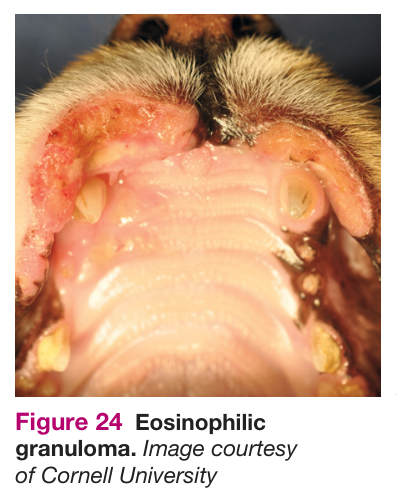
Eosinophilic granuloma.
看點：指南歸類為非腫瘤性的發炎腫塊。（補充，非指南原文）常見於硬腭或舌頭，外觀可能像腫瘤，確診仍要靠切片。
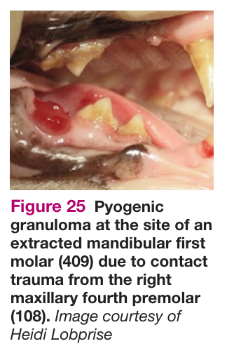
At the site of an extracted 409 due to contact trauma from 108.
看點：典型位置是拔除下 M1（409）後的傷口，被上 P4（108）反覆咬到而形成，可能與舌側臼齒唾液腺受傷有關。也列在拔牙併發症裡。
8．其他口腔疾病
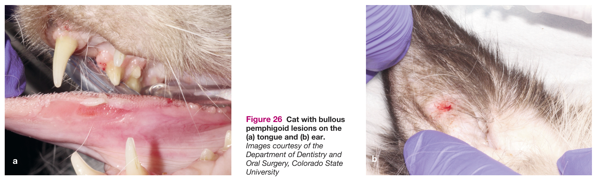
Bullous pemphigoid lesions on (a) tongue and (b) ear.
看點：自體免疫水疱病可以同時出現口腔與皮膚病灶，所以口腔潰瘍時要一併看耳朵和皮膚。要與卡里西病毒引起的潰瘍區分。切片要取病灶邊緣連同正常組織（perilesional biopsy），除非能取到完整水疱。
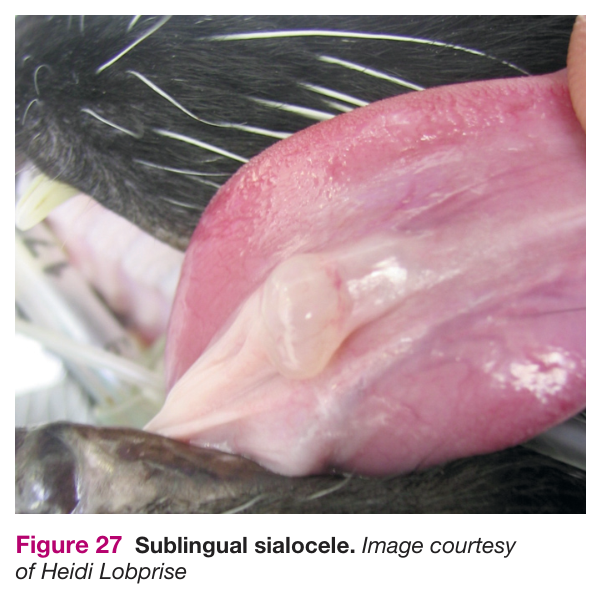
Sublingual sialocele.
看點：貓少見。在舌下形成充滿唾液的腫脹，臨床症狀有吞嚥困難、流涎、頸部腫脹。好發部位是舌下與頸部。
9．檢查、紀錄與器械
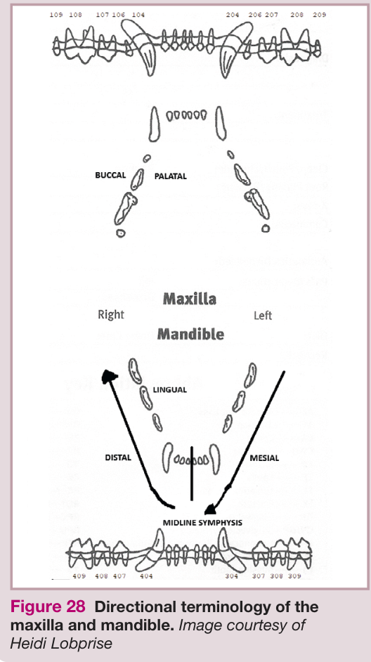
Directional terminology of the maxilla and mandible.
看點：mesial／distal（沿牙弓朝向或遠離中線）、buccal（頰側）／palatal（上顎內側）／lingual（下顎內側）。圖中同時標出 Triadan 編號：1xx 右上、2xx 左上、3xx 左下、4xx 右下。病歷與轉診都要用這套術語。
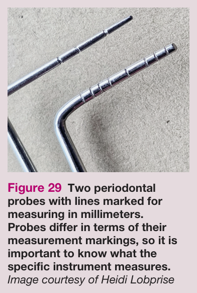
Two periodontal probes; markings differ, so know what your instrument measures.
看點：不同探針的刻度間距不一樣，量囊袋深度前要先知道手上這支每格幾 mm，不然 PD 分期會算錯。
10．局部神經阻斷
神經阻斷是多模式止痛的關鍵，可以穩定麻醉、銜接術後止痛。指南提醒：貓的眶下管平均只有約 3 mm 長（與頭型無關），進針要非常小心，注射前一定要回抽確認沒有抽到血。有研究比較眶下法（針不進眶下管）與經皮上顎尾側法，注射物的分布沒有顯著差異。
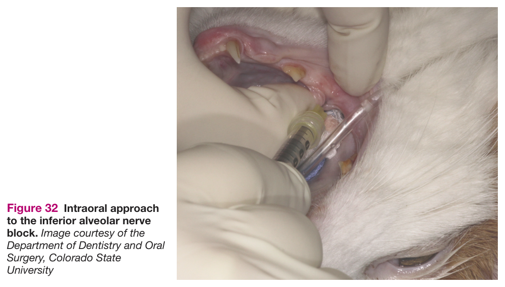
Intraoral approach to the inferior alveolar nerve block.
看點：（補充，非指南原文）從口內進針，目標是下顎孔附近（下顎舌側、最後一顆臼齒的尾側）。可阻斷同側下顎的牙齒與骨頭。
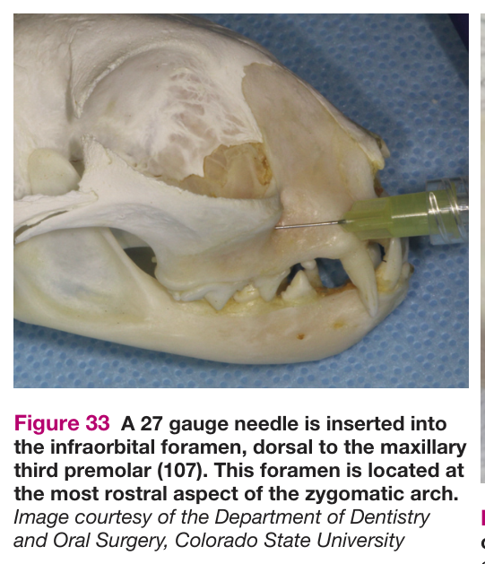
27 G needle into the infraorbital foramen, dorsal to 107; foramen at the most rostral aspect of the zygomatic arch.
定位：眶下孔在上第三前臼齒（107）的背側、顴弓最吻端，使用 27 G 針。因為眶下管很短，針不要深推，以免傷及眼球。
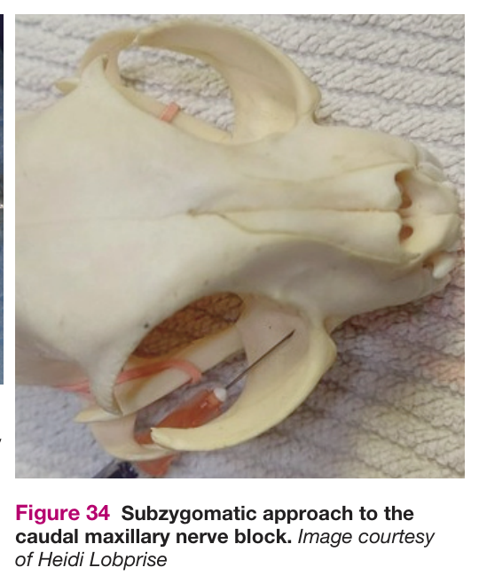
Subzygomatic approach to the caudal maxillary nerve block.
看點：從顴弓下方經皮進針。（補充，非指南原文）可涵蓋同側上顎尾側的牙齒；從頭骨模型可以看出進針方向與眼眶非常接近。
11．術中安全
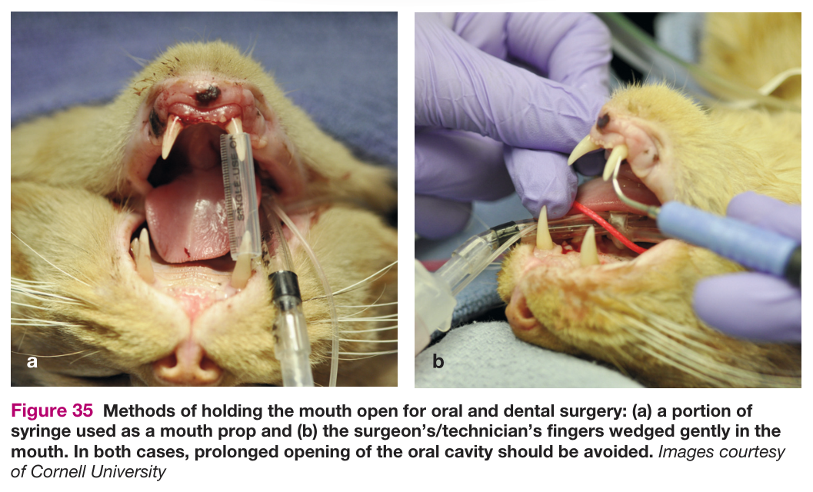
(a) Portion of syringe as mouth prop; (b) fingers wedged gently. Avoid prolonged opening.
重點：彈簧式開口器會持續施力，壓迫上頜動脈，造成腦部缺氧，可導致術後失明等中樞神經缺損。應避免使用，改用剪短的針筒當支撐或用手指輕撐，而且不要長時間張口。
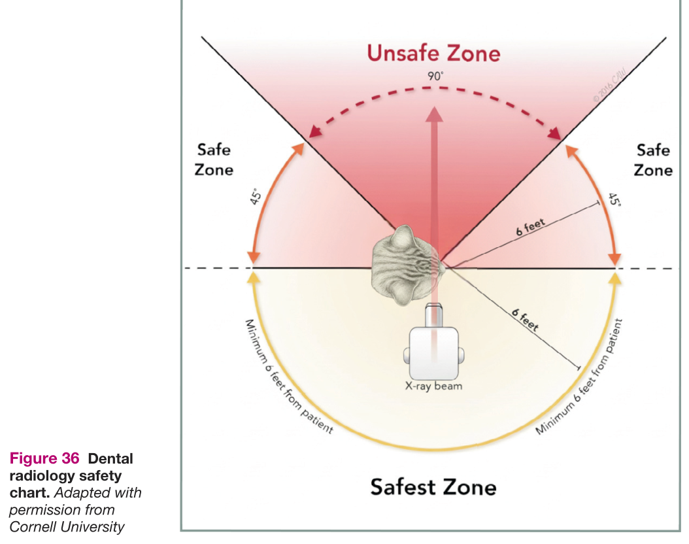
Dental radiology safety chart. Adapted with permission from Cornell University.
重點：操作時任何人都不應站在主射束 180° 範圍內，並且要距離 X 光機至少 6 ft（1.8 m）。使用手持式 X 光機時建議穿鉛衣。
12．拔牙併發症
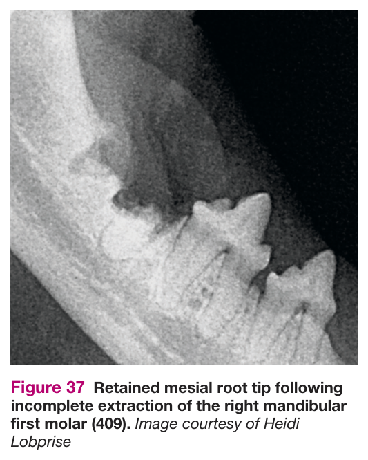
Retained mesial root tip after incomplete extraction of 409.
看點：409 近心根的根尖仍留在齒槽內。這就是拔牙後一定要照 X 光的原因（type 2 TR 刻意截冠保留的牙根除外，但也要照相記錄）。
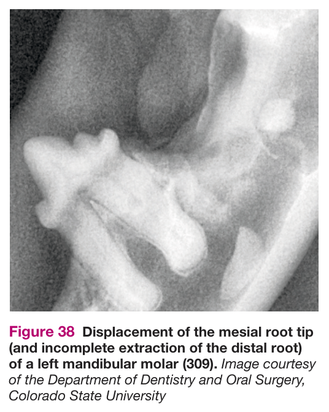
Displacement of the mesial root tip (and incomplete extraction of the distal root) of 309.
看點：牙根可能被推進下顎管（下顎臼齒）或鼻腔（上顎牙）。貓的下顎骨很薄，用挺子時施力要控制。（補充，非指南原文）
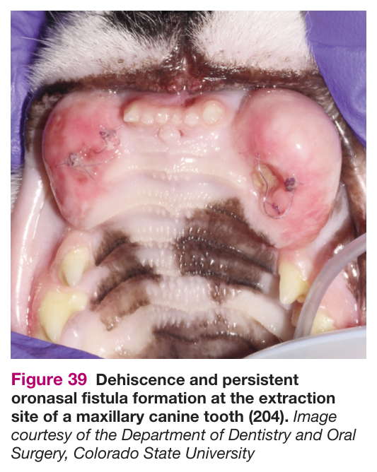
Dehiscence and persistent oronasal fistula at the extraction site of 204.
看點：上犬齒拔除後最怕的併發症。傷口裂開的原因包括縫合張力過大、翻瓣沒有充分減張，或者底下其實有未診斷的腫瘤。
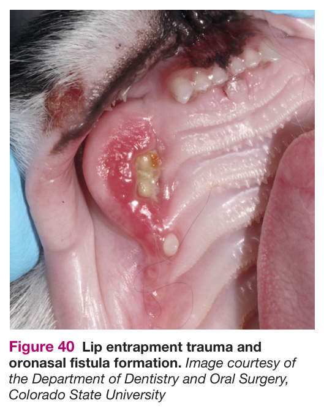
Lip entrapment trauma and oronasal fistula formation.
看點：上犬齒拔除後，指南列為併發症之一。（補充，非指南原文）上唇失去犬齒的支撐，可能被下犬齒勾住並反覆咬傷，嚴重時合併瘻管。
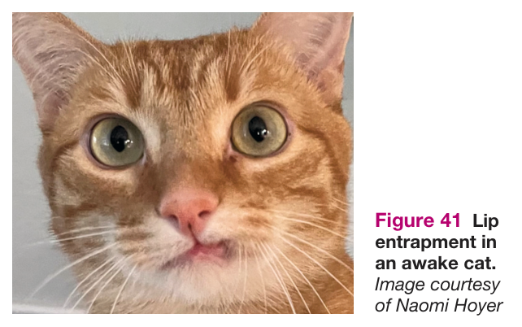
Lip entrapment in an awake cat.
看點：清醒時從外觀就看得出上唇被下犬齒勾住往外翻。拔上犬齒前要跟飼主說明這個可能性。（補充，非指南原文）必要時可考慮修整下犬齒的牙冠。